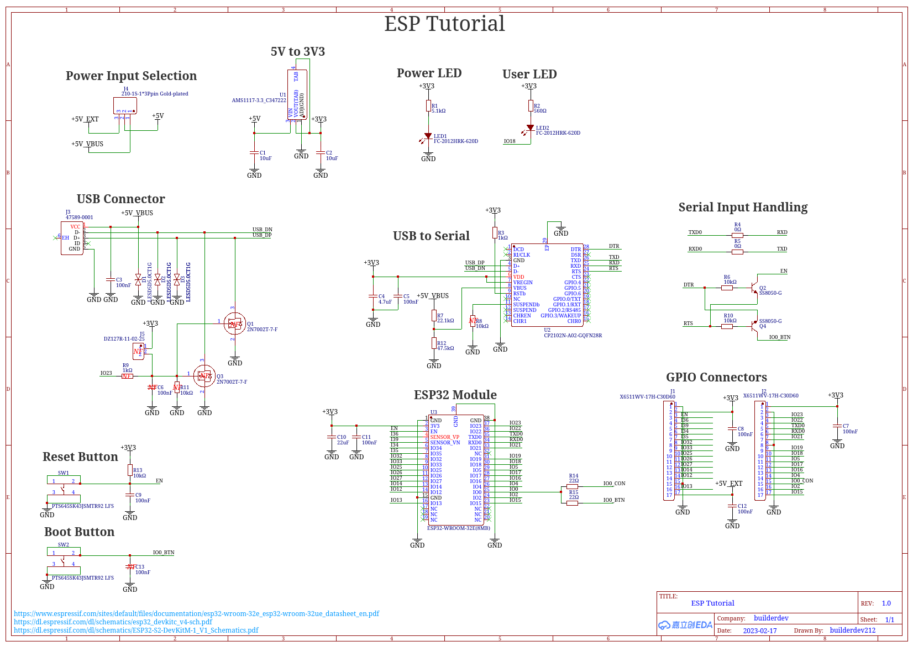
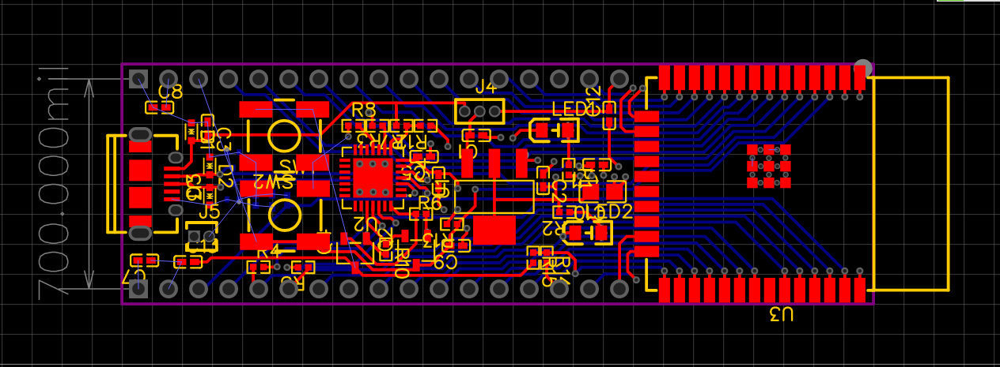
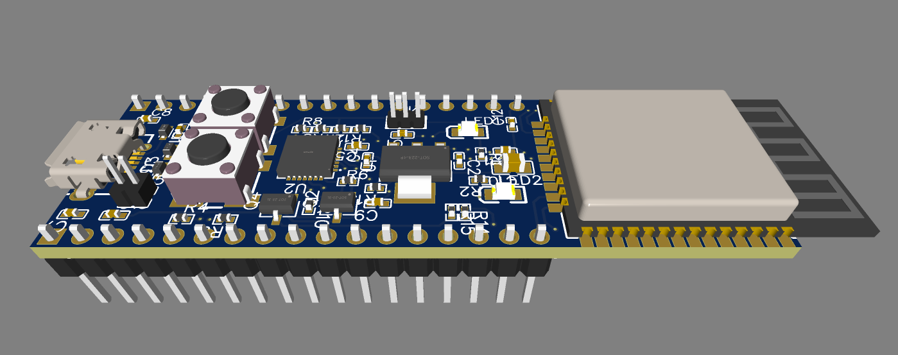
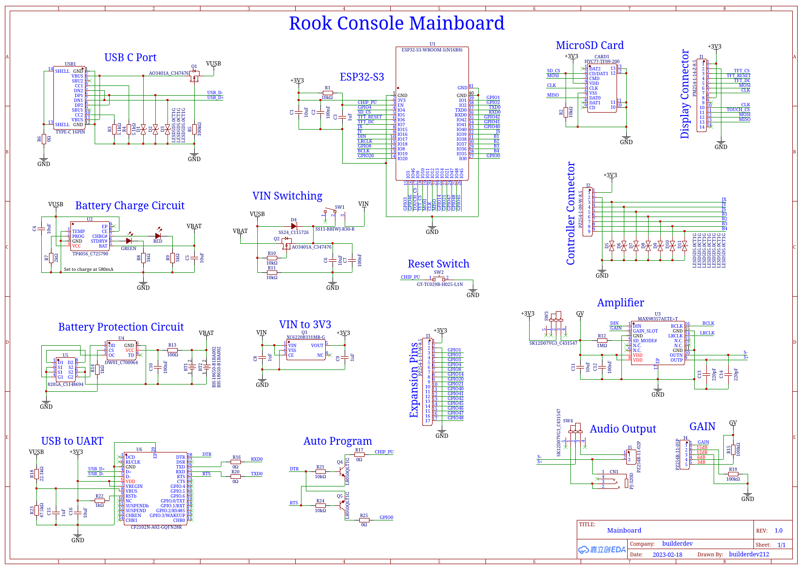
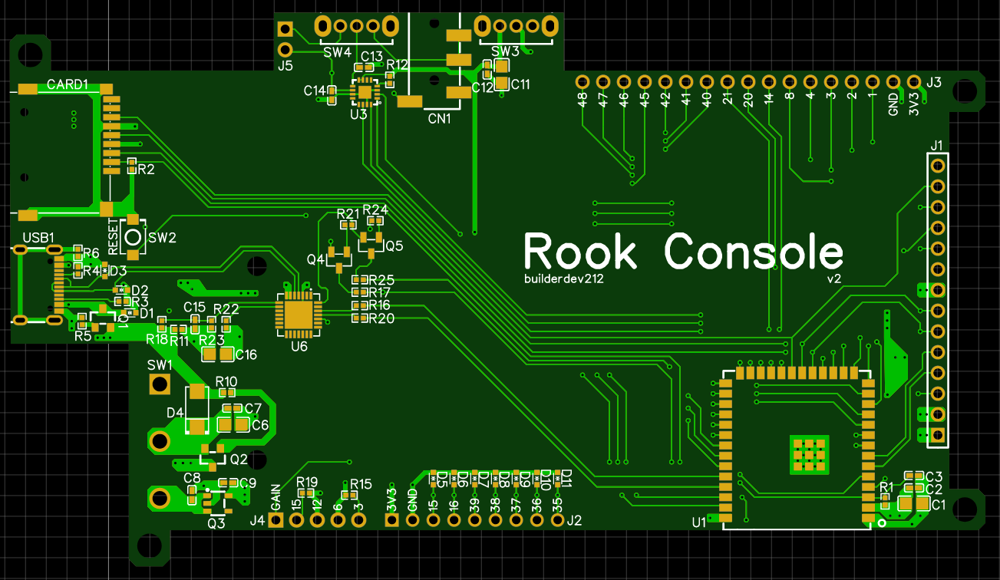
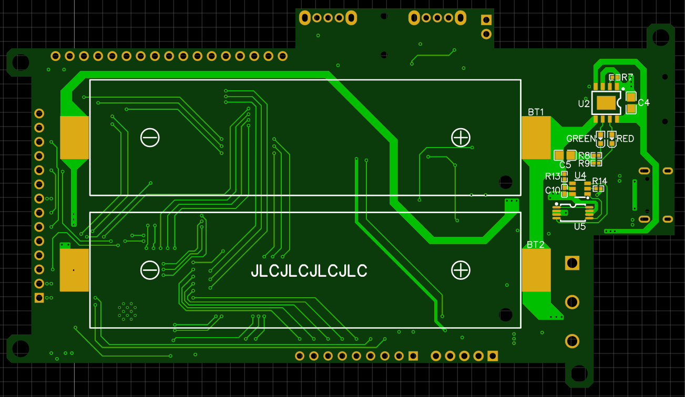
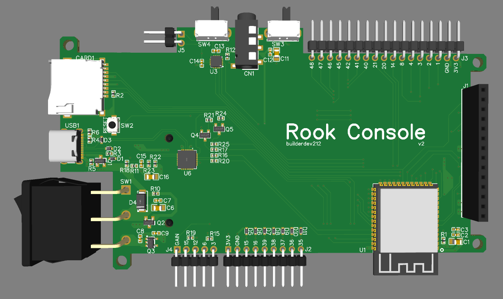
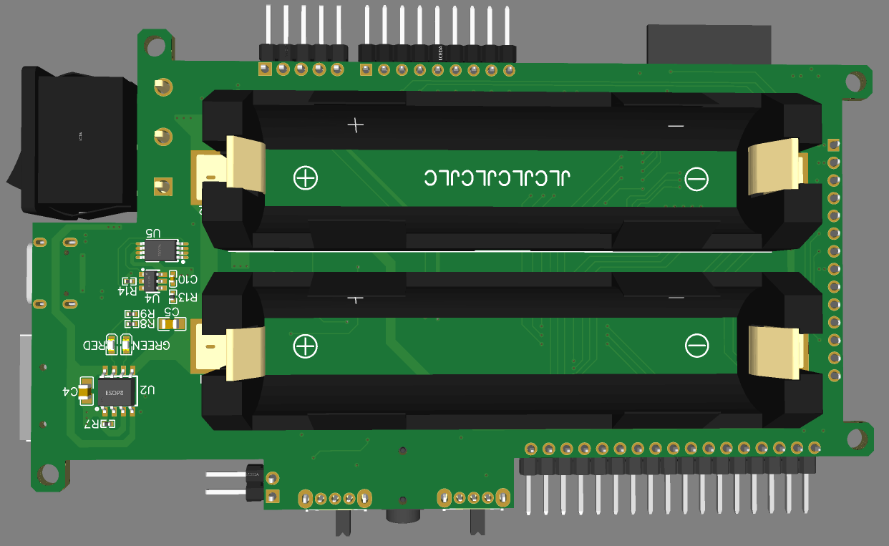
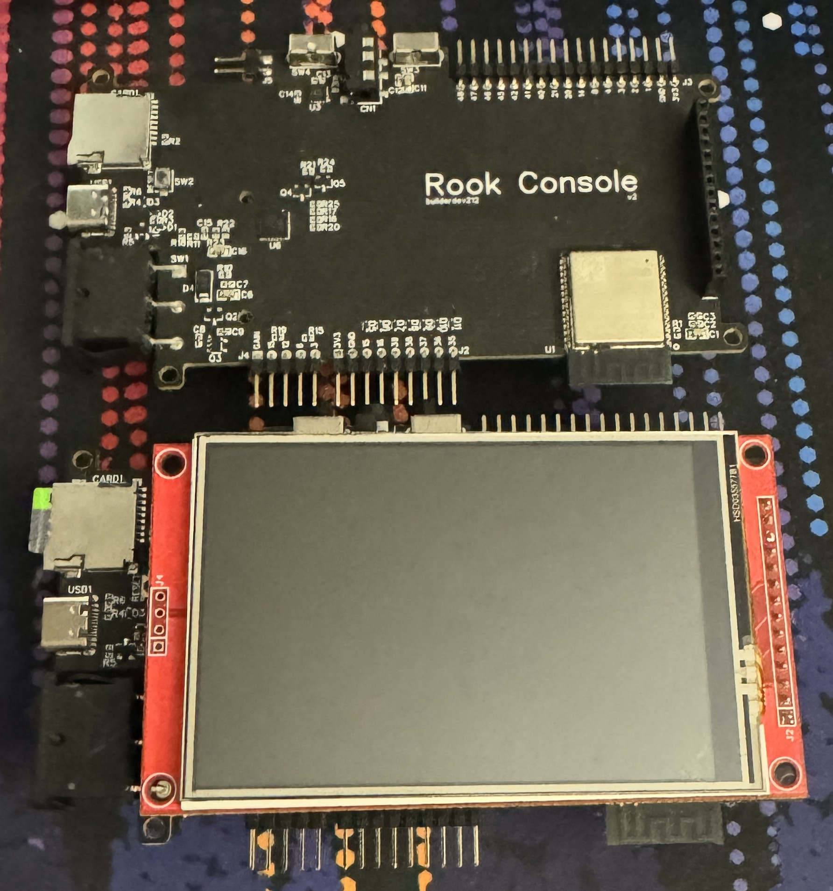
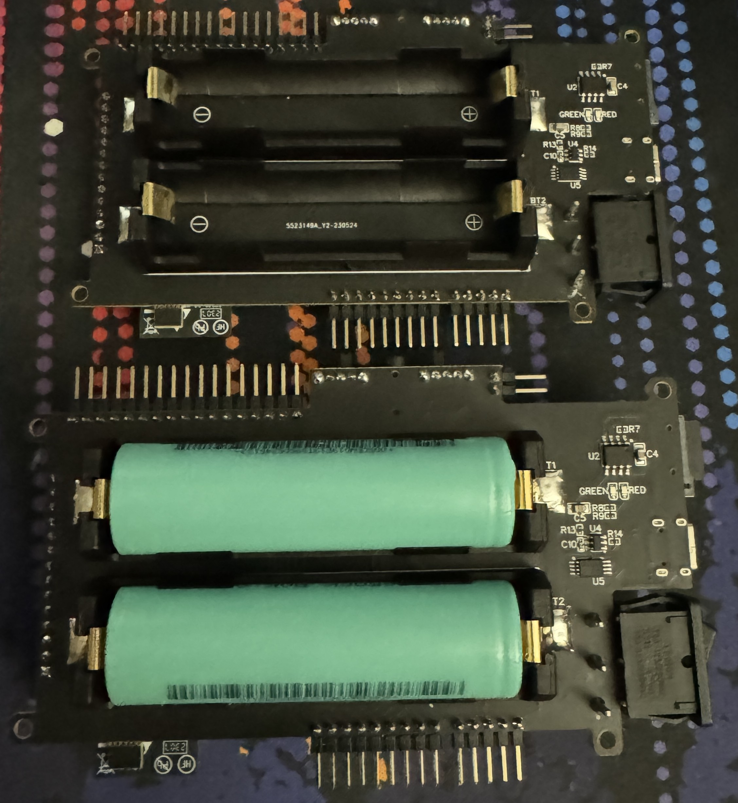

I've been working on the Rook Console on and off for over two years now. It started as a
proof of concept laid out on a breadboard and molded into a bunch of individual PCBs
jerry-rigged into a jank casing. While my current design "works" in a sense, it's a mess
and it has lots of issues. Therefore, I've decided to develop a mainboard for my console.
There are many different pros and cons to this decision. Designing a PCB is a challenging
task and is something that I have no experience doing. Another con is that it will be a
lot more expensive compared to buying cheaper boards that I can easily find on amazon.
However, I am going to design my own mainboard, as the benefits outway the cons. While I
have no experience designing PCBs, I hope to log my journey as a guide to other developers
and hobbyists to help others understand the process. It's certainly a valuable skill and
one that I hope to learn through this process. While my final product will be more
expensive than buying random premade boards and frankensteining them together, I will be
able to make a more compact and reliable console. Soldering a bunch of wires together and
trying to shove it all into a small casing is very difficult and so far I haven't done
the best job of doing it correctly. My goal is to create a design that makes replicating
my build process similar, for both the casing and the hardware.
Let's get to it! >:D
First off, I need to figure out what all my board needs to have on it. Hmm, maybe some
sort of list would be helpful here. insert list here
Weeee. I think I've learned how to make pcbs now. I followed this tutorial video. Massive
props to the guy who made it, it was very easy to follow and really helped me understand
the design process and the software. I didn't fully go through his tutorial but I do
better understand how to use the software now and will be referring back to it for my
implimentation of the ESP32 into my board. I'm using EasyEDA and will most likely use
JCLPCB to manufacture the board. Here are some screenshots of my crappy unfinished dev
board following his tutorial lol, it taught me how to use the software therefore I
believe I'm ready to give my own board a crack.



yes i know i didn't fully finish it. nu shoot pls :(
Hehehe, custom board here i come >:D
There are sooooo many different ESP32 SoCs to choose from when working on a project
like this. Do I want a lot of flash? I do want a lot of PSRAM? Maybe I only want a
single core board. Maybe I want a dual core board. Maybe I want a PCB antenna
attached to the SoC. Maybe I want to use an external antenna. There's so many
different variations of the ESP32. There's even different cores depending on the
refresh and make of the board. How on the earth will I ever choose which one to
use? Well, let's start with looking at the different series of ESP32s.
They are as follow:
ESP-S3-WROOM-1 Datasheet
ESP32-S3-WROOM-1-N16R8
Alright. I've decided on what ESP32 module I'm going to use. Now I have to design
the rest of the board around it. Just like the video tutorial that I followed to
learn how to use EasyEDA, I'm going to be taking a look at some dev boards that
already exist in order to choose parts and make my schematic. Here's a list of all
the different schematics I found that use the ESP32-S3-WROOM-1(the flash and PSRAM
doesn't matter in this case because the pinout will stay the same.):
I've just ordered my board and will update this again when I test it. A huge
thank you to the folks over on reddit who helped me get this figured out.
see this post for the first schematic review and this post for the second
schematic review. This post is the pcb review itself. Below is my final
design, and I will update this once again when I recieve the board.





It's been a while since I last updated this devlog. I'm going to call this
"finished" for now. The board does work! Every part of the board works to
my knowledge. However there are some caviats. I managed to flip my rx and
tx on my usb port, however with a custom usb cable this isn't a problem for
my current development. I'm going to split off into a few different devlogs
for different parts of the project code. I'm going to end this off with
pictures of what the current board looks like. My first PCB has been made,
and works.

